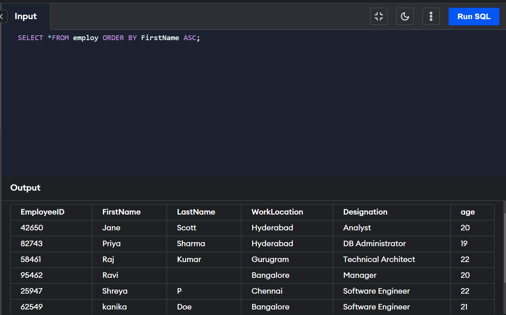
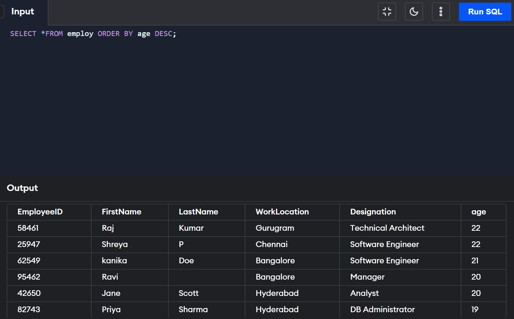

Order-by clause
ORDER BY clause in SQL sorts the records of the column of a table in the SQL database. It helps us sort
the column in both ascending and descending order. The ASC keyword helps us sort in ascending order while
the DESC sorts in descending order. If no keyword is specified in which we have to sort the records in the
column, it will take its default value. `It sorts the records in ascending order by default.
The ORDER BY clause can only be for SELECT statements.
Sort according to one column
We use ASC and DESC keywords to sort a column in ascending and descending order, respectively.
SYNTAX:
SELECT column-list FROM table_name WHERE conditions ORDER BY column_name ASC|DESC
Sort according to multiple columns
Multiple columns are sorted simultaneously by separating their names by the comma(,) operator.
The names of the two columns must be unique. The records are first sorted by the first column and then
the sorted list by the second column if two rows had some value earlier.
SYNTAX:
SELECT column-list FROM table_name WHERE conditions ORDER BY column1 ASC|DESC , column2 ASC|DESC
Sort the records in ascending order
ASC keyword is used to sort the records in ascending order.
SYNTAX:
SELECT column-list FROM table_name WHERE conditions ORDER BY column_name ASC
Sort the records in descending order
DESC keyword is used to sort the records in descending order.
SYNTAX:
SELECT column-list FROM table_name WHERE conditions ORDER BY column_name DESC

